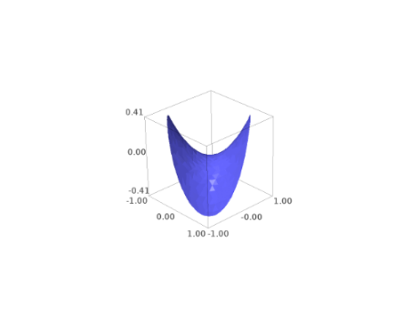
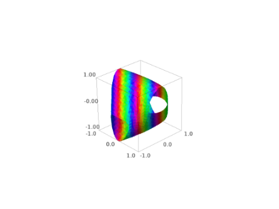
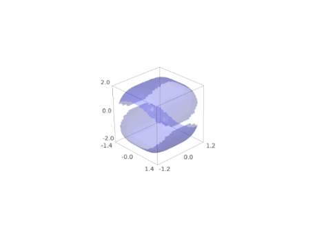
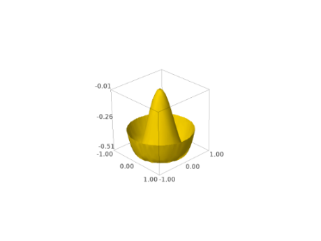

Indexed Face Sets¶
Graphics3D object that consists of a list of polygons, also used for triangulations of other objects.
Usually these objects are not created directly by users.
AUTHORS:
Robert Bradshaw (2007-08-26): initial version
Robert Bradshaw (2007-08-28): significant optimizations
Todo
Smooth triangles using vertex normals
- class sage.plot.plot3d.index_face_set.EdgeIter¶
Bases:
objectA class for iteration over edges
EXAMPLES:
sage: from sage.plot.plot3d.shapes import * sage: S = Box(1,2,3) sage: len(list(S.edges())) == 12 # indirect doctest True
- class sage.plot.plot3d.index_face_set.FaceIter¶
Bases:
objectA class for iteration over faces
EXAMPLES:
sage: from sage.plot.plot3d.shapes import * sage: S = Box(1,2,3) sage: len(list(S.faces())) == 6 # indirect doctest True
- class sage.plot.plot3d.index_face_set.IndexFaceSet¶
Bases:
sage.plot.plot3d.base.PrimitiveObjectGraphics3D object that consists of a list of polygons, also used for triangulations of other objects.
Polygons (mostly triangles and quadrilaterals) are stored in the c struct
face_c(see transform.pyx). Rather than storing the points directly for each polygon, each face consists a list of pointers into a common list of points which are basically triples of doubles in apoint_c.Moreover, each face has an attribute
colorwhich is used to store color information when faces are colored. The red/green/blue components are then available as floats between 0 and 1 usingcolor.r,color.g,color.b.Usually these objects are not created directly by users.
EXAMPLES:
sage: from sage.plot.plot3d.index_face_set import IndexFaceSet sage: S = IndexFaceSet([[(1,0,0),(0,1,0),(0,0,1)],[(1,0,0),(0,1,0),(0,0,0)]]) sage: S.face_list() [[(1.0, 0.0, 0.0), (0.0, 1.0, 0.0), (0.0, 0.0, 1.0)], [(1.0, 0.0, 0.0), (0.0, 1.0, 0.0), (0.0, 0.0, 0.0)]] sage: S.vertex_list() [(1.0, 0.0, 0.0), (0.0, 1.0, 0.0), (0.0, 0.0, 1.0), (0.0, 0.0, 0.0)] sage: def make_face(n): return [(0,0,n),(0,1,n),(1,1,n),(1,0,n)] sage: S = IndexFaceSet([make_face(n) for n in range(10)]) sage: S.show() sage: point_list = [(1,0,0),(0,1,0)] + [(0,0,n) for n in range(10)] sage: face_list = [[0,1,n] for n in range(2,10)] sage: S = IndexFaceSet(face_list, point_list, color='red') sage: S.face_list() [[(1.0, 0.0, 0.0), (0.0, 1.0, 0.0), (0.0, 0.0, 0.0)], [(1.0, 0.0, 0.0), (0.0, 1.0, 0.0), (0.0, 0.0, 1.0)], [(1.0, 0.0, 0.0), (0.0, 1.0, 0.0), (0.0, 0.0, 2.0)], [(1.0, 0.0, 0.0), (0.0, 1.0, 0.0), (0.0, 0.0, 3.0)], [(1.0, 0.0, 0.0), (0.0, 1.0, 0.0), (0.0, 0.0, 4.0)], [(1.0, 0.0, 0.0), (0.0, 1.0, 0.0), (0.0, 0.0, 5.0)], [(1.0, 0.0, 0.0), (0.0, 1.0, 0.0), (0.0, 0.0, 6.0)], [(1.0, 0.0, 0.0), (0.0, 1.0, 0.0), (0.0, 0.0, 7.0)]] sage: S.show()
A simple example of colored IndexFaceSet (trac ticket #12212):
sage: from sage.plot.plot3d.index_face_set import IndexFaceSet sage: from sage.plot.plot3d.texture import Texture sage: point_list = [(2,0,0),(0,2,0),(0,0,2),(0,1,1),(1,0,1),(1,1,0)] sage: face_list = [[0,4,5],[3,4,5],[2,3,4],[1,3,5]] sage: col = rainbow(10, 'rgbtuple') sage: t_list = [Texture(col[i]) for i in range(10)] sage: S = IndexFaceSet(face_list, point_list, texture_list=t_list) sage: S.show(viewer='tachyon')
- add_condition(condition, N=100, eps=1e-06)¶
Cut the surface according to the given condition.
This allows to take the intersection of the surface with a domain in 3-space, in such a way that the result has a smooth boundary.
INPUT:
condition– boolean function on ambient space, that defines the domainN– max number of steps used by the bisection method (default: 100) to cut the boundary triangles that are not entirely within the domain.eps– target accuracy in the intersection (default: 1.0e-6)
OUTPUT:
an
IndexFaceSetThis will contain both triangular and quadrilateral faces.
EXAMPLES:
sage: var('x,y,z') (x, y, z) sage: P = implicit_plot3d(z-x*y,(-2,2),(-2,2),(-2,2)) sage: def condi(x,y,z): ....: return bool(x*x+y*y+z*z <= Integer(1)) sage: R = P.add_condition(condi,20);R Graphics3d Object
 An example with colors:
sage: def condi(x,y,z): ....: return bool(x*x+y*y <= 1.1) sage: cm = colormaps.hsv sage: cf = lambda x,y,z: float(x+y) % 1 sage: P = implicit_plot3d(x**2+y**2+z**2-1-x**2*z+y**2*z,(-2,2),(-2,2),(-2,2),color=(cm,cf)) sage: R = P.add_condition(condi,40); R Graphics3d Object
 An example with transparency:
sage: P = implicit_plot3d(x**4+y**4+z**2-4,(x,-2,2),(y,-2,2),(z,-2,2),alpha=0.3) sage: def cut(a,b,c): ....: return a*a+c*c > 2 sage: Q = P.add_condition(cut,40); Q Graphics3d Object
 A sombrero with quadrilaterals:
sage: P = plot3d(-sin(2*x*x+2*y*y)*exp(-x*x-y*y),(x,-2,2),(y,-2,2), ....: color='gold') sage: def cut(x,y,z): ....: return x*x+y*y < 1 sage: Q = P.add_condition(cut);Q Graphics3d Object
 Todo
Use a dichotomy to search for the place where to cut,
Compute the cut only once for each edge.
- bounding_box()¶
Calculate the bounding box for the vertices in this object (ignoring infinite or NaN coordinates).
OUTPUT:
a tuple ( (low_x, low_y, low_z), (high_x, high_y, high_z)), which gives the coordinates of opposite corners of the bounding box.
EXAMPLES:
sage: x,y = var('x,y') sage: p = plot3d(sqrt(sin(x)*sin(y)), (x,0,2*pi),(y,0,2*pi)) sage: p.bounding_box() ((0.0, 0.0, -0.0), (6.283185307179586, 6.283185307179586, 0.9991889981715697))
- dual(**kwds)¶
Return the dual.
EXAMPLES:
sage: S = cube() sage: T = S.dual() sage: len(T.vertex_list()) 6
- edge_list()¶
Return the list of edges.
EXAMPLES:
sage: from sage.plot.plot3d.shapes import * sage: S = Box(1,2,3) sage: S.edge_list()[0] ((1.0, -2.0, 3.0), (1.0, 2.0, 3.0))
- edges()¶
An iterator over the edges.
EXAMPLES:
sage: from sage.plot.plot3d.shapes import * sage: S = Box(1,2,3) sage: list(S.edges())[0] ((1.0, -2.0, 3.0), (1.0, 2.0, 3.0))
- face_list(render_params=None)¶
Return the list of faces.
Every face is given as a tuple of vertices.
EXAMPLES:
sage: from sage.plot.plot3d.shapes import * sage: S = Box(1,2,3) sage: S.face_list(S.default_render_params())[0] [(1.0, 2.0, 3.0), (-1.0, 2.0, 3.0), (-1.0, -2.0, 3.0), (1.0, -2.0, 3.0)]
- faces()¶
An iterator over the faces.
EXAMPLES:
sage: from sage.plot.plot3d.shapes import * sage: S = Box(1,2,3) sage: list(S.faces()) == S.face_list() True
- has_local_colors()¶
Return
Trueif and only if every face has an individual color.EXAMPLES:
sage: from sage.plot.plot3d.index_face_set import IndexFaceSet sage: from sage.plot.plot3d.texture import Texture sage: point_list = [(2,0,0),(0,2,0),(0,0,2),(0,1,1),(1,0,1),(1,1,0)] sage: face_list = [[0,4,5],[3,4,5],[2,3,4],[1,3,5]] sage: col = rainbow(10, 'rgbtuple') sage: t_list=[Texture(col[i]) for i in range(10)] sage: S = IndexFaceSet(face_list, point_list, texture_list=t_list) sage: S.has_local_colors() True sage: from sage.plot.plot3d.shapes import * sage: S = Box(1,2,3) sage: S.has_local_colors() False
- index_faces()¶
Return the list over all faces of the indices of the vertices.
EXAMPLES:
sage: from sage.plot.plot3d.shapes import * sage: S = Box(1,2,3) sage: S.index_faces() [[0, 1, 2, 3], [0, 4, 5, 1], [0, 3, 6, 4], [5, 4, 6, 7], [6, 3, 2, 7], [2, 1, 5, 7]]
- index_faces_with_colors()¶
Return the list over all faces of (indices of the vertices, color).
This only works if every face has its own color.
See also
EXAMPLES:
A simple colored one:
sage: from sage.plot.plot3d.index_face_set import IndexFaceSet sage: from sage.plot.plot3d.texture import Texture sage: point_list = [(2,0,0),(0,2,0),(0,0,2),(0,1,1),(1,0,1),(1,1,0)] sage: face_list = [[0,4,5],[3,4,5],[2,3,4],[1,3,5]] sage: col = rainbow(10, 'rgbtuple') sage: t_list=[Texture(col[i]) for i in range(10)] sage: S = IndexFaceSet(face_list, point_list, texture_list=t_list) sage: S.index_faces_with_colors() [([0, 4, 5], '#ff0000'), ([3, 4, 5], '#ff9900'), ([2, 3, 4], '#cbff00'), ([1, 3, 5], '#33ff00')]
When the texture is global, an error is raised:
sage: from sage.plot.plot3d.shapes import * sage: S = Box(1,2,3) sage: S.index_faces_with_colors() Traceback (most recent call last): ... ValueError: the texture is global
- is_enclosed()¶
Whether or not it is necessary to render the back sides of the polygons.
One is assuming, of course, that they have the correct orientation.
This is may be passed in on construction. It is also calculated in
sage.plot.plot3d.parametric_surface.ParametricSurfaceby verifying the opposite edges of the rendered domain either line up or are pinched together.EXAMPLES:
sage: from sage.plot.plot3d.index_face_set import IndexFaceSet sage: IndexFaceSet([[(0,0,1),(0,1,0),(1,0,0)]]).is_enclosed() False
- jmol_repr(render_params)¶
Return a jmol representation for
self.
- json_repr(render_params)¶
Return a json representation for
self.
- obj_repr(render_params)¶
Return an obj representation for
self.
- partition(f)¶
Partition the faces of
self.The partition is done according to the value of a map \(f: \RR^3 \rightarrow \ZZ\) applied to the center of each face.
INPUT:
\(f\) – a function from \(\RR^3\) to \(\ZZ\)
EXAMPLES:
sage: from sage.plot.plot3d.shapes import * sage: S = Box(1,2,3) sage: len(S.partition(lambda x,y,z : floor(x+y+z))) 6
- sticker(face_list, width, hover, **kwds)¶
Return a sticker on the chosen faces.
- stickers(colors, width, hover)¶
Return a group of IndexFaceSets.
INPUT:
colors– list of colors/textures to use (in cyclic order)width– offset perpendicular into the edge (to create a border) may also be negativehover– offset normal to the face (usually have to float above the original surface so it shows, typically this value is very small compared to the actual object
OUTPUT:
Graphics3dGroup of stickers
EXAMPLES:
sage: from sage.plot.plot3d.shapes import Box sage: B = Box(.5,.4,.3, color='black') sage: S = B.stickers(['red','yellow','blue'], 0.1, 0.05) sage: S.show() sage: (S+B).show()
- stl_binary_repr(render_params)¶
Return data for STL (STereoLithography) representation of the surface.
The STL binary representation is a list of binary strings, one for each triangle.
EXAMPLES:
sage: G = sphere() sage: data = G.stl_binary_repr(G.default_render_params()); len(data) 1368
- tachyon_repr(render_params)¶
Return a tachyon object for
self.EXAMPLES:
A basic test with a triangle:
sage: G = polygon([(0,0,1), (1,1,1), (2,0,1)]) sage: s = G.tachyon_repr(G.default_render_params()); s ['TRI V0 0 0 1 V1 1 1 1 V2 2 0 1', ...]
A simple colored one:
sage: from sage.plot.plot3d.index_face_set import IndexFaceSet sage: from sage.plot.plot3d.texture import Texture sage: point_list = [(2,0,0),(0,2,0),(0,0,2),(0,1,1),(1,0,1),(1,1,0)] sage: face_list = [[0,4,5],[3,4,5],[2,3,4],[1,3,5]] sage: col = rainbow(10, 'rgbtuple') sage: t_list=[Texture(col[i]) for i in range(10)] sage: S = IndexFaceSet(face_list, point_list, texture_list=t_list) sage: S.tachyon_repr(S.default_render_params()) ['TRI V0 2 0 0 V1 1 0 1 V2 1 1 0', 'TEXTURE... AMBIENT 0.3 DIFFUSE 0.7 SPECULAR 0 OPACITY 1.0... COLOR 1 0 0 ... TEXFUNC 0',...]
- threejs_repr(render_params)¶
Return representation of the surface suitable for plotting with three.js.
EXAMPLES:
A simple triangle:
sage: G = polygon([(0,0,1), (1,1,1), (2,0,1)]) sage: G.threejs_repr(G.default_render_params()) [('surface', {'color': '#0000ff', 'faces': [[0, 1, 2]], 'opacity': 1.0, 'vertices': [{'x': 0.0, 'y': 0.0, 'z': 1.0}, {'x': 1.0, 'y': 1.0, 'z': 1.0}, {'x': 2.0, 'y': 0.0, 'z': 1.0}]})]
The same but with more options applied:
sage: G = polygon([(0,0,1), (1,1,1), (2,0,1)], color='red', opacity=0.5, ....: render_order=2, threejs_flat_shading=True, ....: single_side=True, mesh=True, thickness=10, depth_write=True) sage: G.threejs_repr(G.default_render_params()) [('surface', {'color': '#ff0000', 'depthWrite': True, 'faces': [[0, 1, 2]], 'linewidth': 10.0, 'opacity': 0.5, 'renderOrder': 2.0, 'showMeshGrid': True, 'singleSide': True, 'useFlatShading': True, 'vertices': [{'x': 0.0, 'y': 0.0, 'z': 1.0}, {'x': 1.0, 'y': 1.0, 'z': 1.0}, {'x': 2.0, 'y': 0.0, 'z': 1.0}]})]
- vertex_list()¶
Return the list of vertices.
EXAMPLES:
sage: from sage.plot.plot3d.shapes import * sage: S = polygon([(0,0,1), (1,1,1), (2,0,1)]) sage: S.vertex_list()[0] (0.0, 0.0, 1.0)
- vertices()¶
An iterator over the vertices.
EXAMPLES:
sage: from sage.plot.plot3d.shapes import * sage: S = Cone(1,1) sage: list(S.vertices()) == S.vertex_list() True
- x3d_geometry()¶
Return the x3d data.
EXAMPLES:
A basic test with a triangle:
sage: G = polygon([(0,0,1), (1,1,1), (2,0,1)]) sage: print(G.x3d_geometry()) <IndexedFaceSet coordIndex='0,1,2,-1'> <Coordinate point='0.0 0.0 1.0,1.0 1.0 1.0,2.0 0.0 1.0'/> </IndexedFaceSet>
A simple colored one:
sage: from sage.plot.plot3d.index_face_set import IndexFaceSet sage: from sage.plot.plot3d.texture import Texture sage: point_list = [(2,0,0),(0,2,0),(0,0,2),(0,1,1),(1,0,1),(1,1,0)] sage: face_list = [[0,4,5],[3,4,5],[2,3,4],[1,3,5]] sage: col = rainbow(10, 'rgbtuple') sage: t_list=[Texture(col[i]) for i in range(10)] sage: S = IndexFaceSet(face_list, point_list, texture_list=t_list) sage: print(S.x3d_geometry()) <IndexedFaceSet solid='False' colorPerVertex='False' coordIndex='0,4,5,-1,3,4,5,-1,2,3,4,-1,1,3,5,-1'> <Coordinate point='2.0 0.0 0.0,0.0 2.0 0.0,0.0 0.0 2.0,0.0 1.0 1.0,1.0 0.0 1.0,1.0 1.0 0.0'/> <Color color='1.0 0.0 0.0,1.0 0.6000000000000001 0.0,0.7999999999999998 1.0 0.0,0.20000000000000018 1.0 0.0' /> </IndexedFaceSet>
- class sage.plot.plot3d.index_face_set.VertexIter¶
Bases:
objectA class for iteration over vertices
EXAMPLES:
sage: from sage.plot.plot3d.shapes import * sage: S = Box(1,2,3) sage: len(list(S.vertices())) == 8 # indirect doctest True
- sage.plot.plot3d.index_face_set.cut_edge_by_bisection(pointa, pointb, condition, eps=1e-06, N=100)¶
Cut an intersecting edge using the bisection method.
Given two points (pointa and pointb) and a condition (boolean function), this calculates the position at the edge (defined by both points) where the boolean condition switches its value.
INPUT:
pointa,pointb– two points in 3-dimensional spaceN– max number of steps in the bisection method (default: 100) to cut the boundary triangles that are not entirely within the domain.eps– target accuracy in the intersection (default: 1.0e-6)
OUTPUT:
intersection of the edge defined by
pointaandpointb, andcondition.EXAMPLES:
sage: from sage.plot.plot3d.index_face_set import cut_edge_by_bisection sage: cut_edge_by_bisection((0.0,0.0,0.0),(1.0,1.0,0.0),( (lambda x,y,z: x**2+y**2+z**2<1) ),eps=1.0E-12) (0.7071067811864395, 0.7071067811864395, 0.0)
- sage.plot.plot3d.index_face_set.midpoint(pointa, pointb, w)¶
Return the weighted mean of two points in 3-space.
INPUT:
pointa,pointb– two points in 3-dimensional spacew– a real weight between 0 and 1.
If the weight is zero, the result is
pointb. If the weight is one, the result ispointa.EXAMPLES:
sage: from sage.plot.plot3d.index_face_set import midpoint sage: midpoint((1,2,3),(4,4,4),0.8) (1.60000000000000, 2.40000000000000, 3.20000000000000)
- sage.plot.plot3d.index_face_set.sticker(face, width, hover)¶
Return a sticker over the given face.